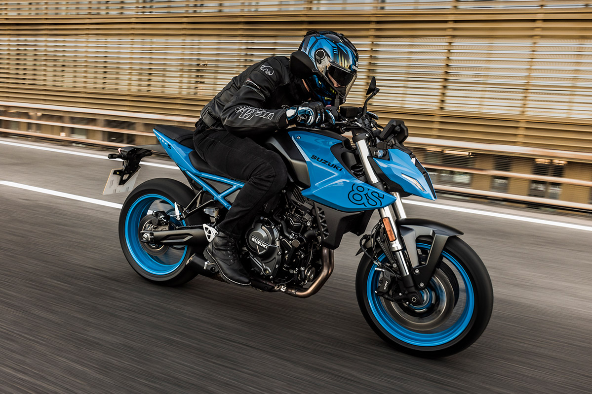
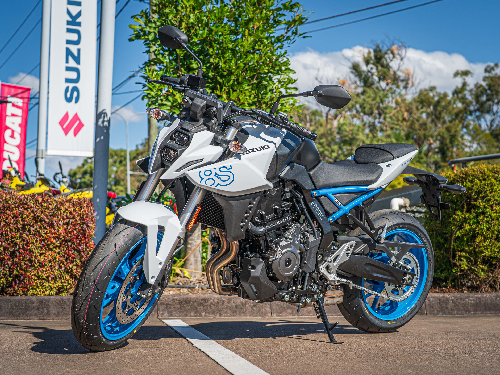
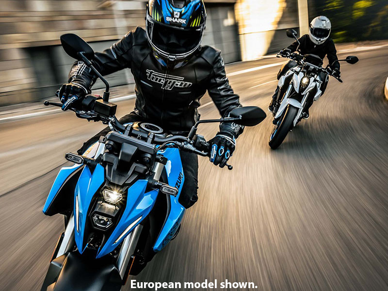
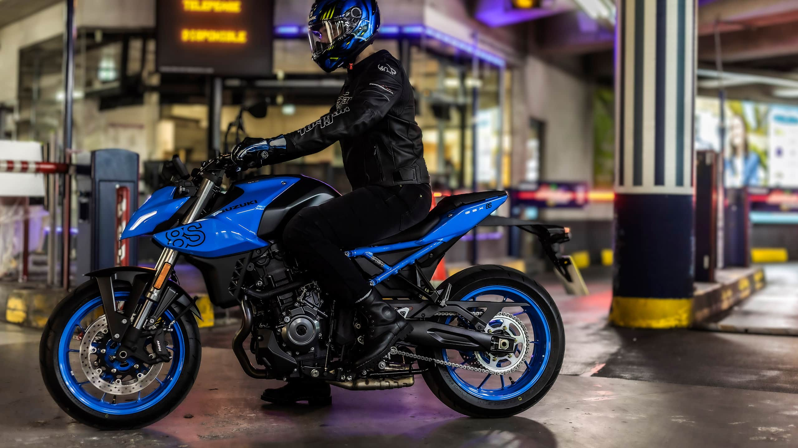
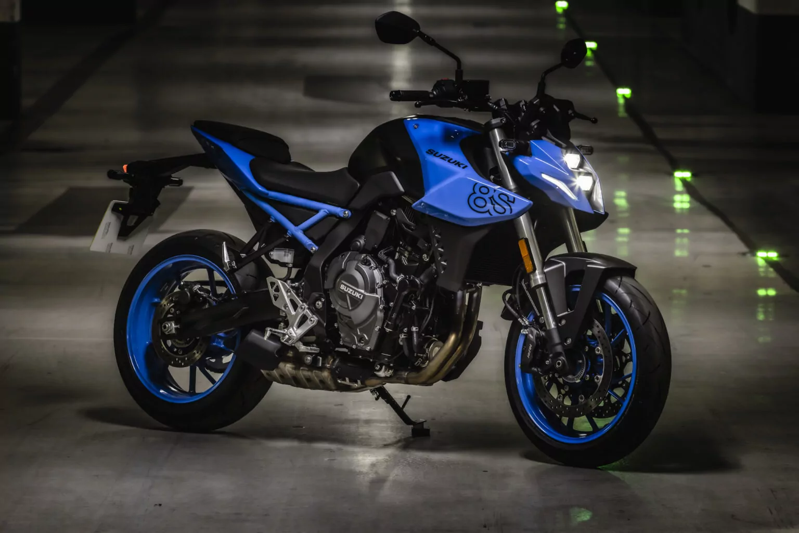

SUZUKI
SUZUKI
Is a middleweight naked street motorcycle that is designed for both new and returning riders².
The GSX-8S is powered by a torquey 776cc, 270° crank, parallel twin engine¹. This engine delivers exciting performance and an exhilarating soundtrack throughout the rev range¹. It is focused on dynamic performance and delivers abundant torque for flexibility suited to a range of riders¹.
The GSX-8S features a new frame made from steel tube sections¹. The frame is engineered to provide excellent straight-line stability, contribute to agile handling, and perform well in the city as well as at highway speeds¹. The new exposed subframe is designed to support the rider, and contribute to the GSX-8S’ slim appearance and stripped-down look¹.
The GSX-8S has radially-mounted front brake calipers biting 310mm discs which provide strong stopping power and predictable braking performance¹.
The GSX-8S is equipped with a comfortable and sporty riding design¹. It features a wheelbase that is longer than on a typical naked streetfighter, contributing to straight-line stability¹. The overall chassis geometry provides agile handling and cornering,/ performance¹.
As of 2024, the GSX-8S is available for £8,199¹.